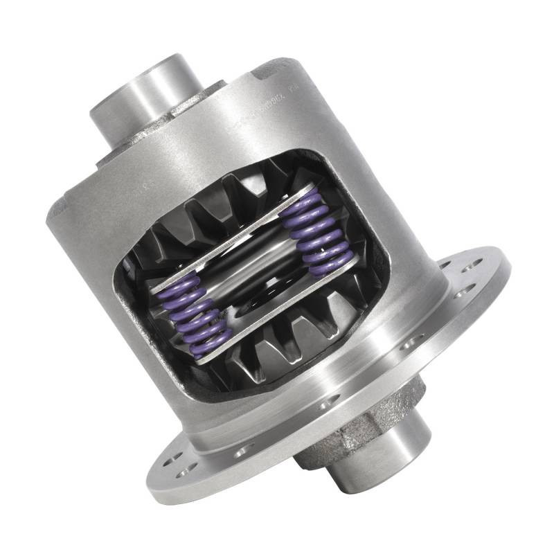
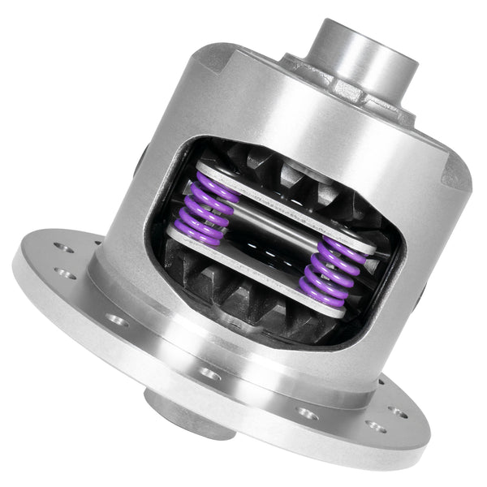
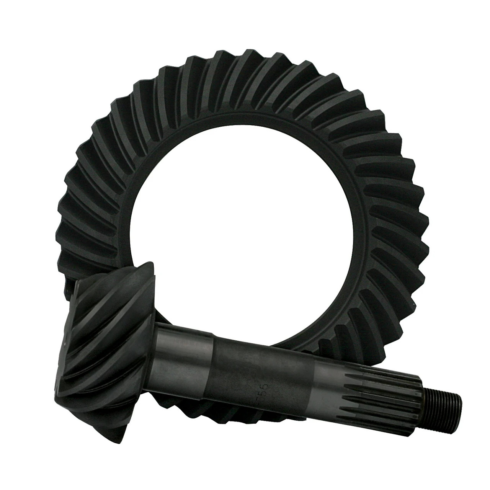

Yukon Dura Grip Positraction for GM 9.5”
YDGGM9.5-33-1
Yukon Dura Grip positraction unit for GM 9.5-inch rear axle applications with 33-spline axles.
Call for availability
We help restoration builders, muscle car drivers, and technicians find the right transmissions, differentials, and hard-to-find parts.
Expert support for classic car restorations with hard-to-find vintage parts and components.
High-quality transmissions, differentials, and drivetrain parts for classic muscle cars.
Specialized parts for 4x4 Jeeps, trucks, and off-road vehicle builds and modifications.
30+ years of expertise in rebuilding and supplying Muncie transmissions and components.
Comprehensive selection of GM differentials, overdrives, and drivetrain solutions.
Part identification and technical support to ensure you get exactly what you need.

YDGGM9.5-33-1
Yukon Dura Grip positraction unit for GM 9.5-inch rear axle applications with 33-spline axles.

YDGGM12P-3-30-1
Yukon Dura Grip positraction for GM 12-bolt passenger car rear ends with 30-spline axles.

ZG GM55P-355
USA Standard Gear ring and pinion set for GM Chevy 55P differentials in a 3.55 gear ratio.
Focused on restoration, vintage vehicles, old cars, classic muscle cars, and high-performance vehicles. Our knowledgeable staff looks forward to assisting you with your specific transmission, differential, or classic car restoration needs.
"I don't let just anyone work on my classic 1967 Camaro, but Jim Tadduni is one of them."
Classic 1967 Camaro owner